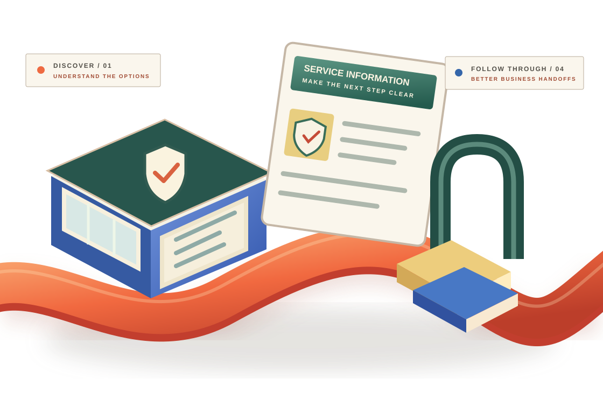

01 / INFORMATION
Useful options.
Unclear explanations.
Prospects need accessible, approved policy information, exclusions and official contact channels.
INDUSTRY 08 / INSURANCE BUSINESSES
Insurance is built on important conversations. Make approved service information easier to find, general enquiries easier to direct and the people behind routine business follow-ups better connected.
DISCOVER → UNDERSTAND → ENQUIRE → COORDINATE

CONCEPTUAL ARTWORK / NOT A REAL INSURER OR COVERAGE GUARANTEE
01 / THE EVERYDAY BUSINESS CHALLENGE
Financial protection products can be complex. Accurate public communication and timely non-sensitive business follow-ups deserve careful attention.
Prospects need accessible, approved policy information, exclusions and official contact channels.
General business enquiries need an appropriate owner and clearly communicated next steps.
Marketing and operations teams benefit from a consistent, non-claims workflow.
02 / THE CONNECTED BUSINESS JOURNEY
This is an illustrative public-information and administrative business journey. No policy issuance, eligibility assessment, claims adjudication or coverage decision is performed.
PUBLIC INFORMATION / DISCOVERY
Share accurate, insurer-approved public information and guide prospects toward official communication channels.
03 / GENERAL BUSINESS SUPPORT
Taamerat360 supports business visibility, general enquiry communication and non-sensitive operations—not regulated insurance sales, policy administration or claims handling.
Improve discovery of approved public information and appropriate contact routes.
Explore packageOrganise general enquiries and routine business follow-up without making recommendations.
Explore packageHelp marketing and administrative teams coordinate approved next steps.
Explore packageConnect business discovery, enquiry routing and non-claims handovers.
Explore package04 / VERIFIED WORK, NOT FICTION
Any client examples, business results and endorsements will appear only when verified and approved. We will not invent insurers, licences, claim results, coverage guarantees or customer testimonials.
Start with your own challenge[Client-verified business challenge, approved approach and substantiated results]
05 / START WITH GENERAL BUSINESS NEEDS
Use three fixed, non-sensitive business choices to create a starting brief in your browser. Do not enter policy numbers, personal health details, claims records, financial data or customer identities.
Choose your organisation and priorities to prepare a non-claims business discussion brief.
Your choices stay in this browser unless you decide to copy them.
06 / BOUNDARIES THAT MATTER
Business support is separate from regulated insurance work, customer data and policy decisions.
No. This page does not offer policies, quotations, coverage recommendations, underwriting, claim handling, claim approval, financial advice or regulated insurance services.
No. Never enter policy numbers, medical details, claims history, payment-card details, government identification or customer records. Use only approved secure channels operated by your insurer for those matters.
Any integration would require separate technical discovery, sector-specific regulatory and legal review, data-protection assessment, security approval and a written scope. This demonstration does not integrate with policy or claims systems.
INSURANCE / THE NEXT CONVERSATION
Start with one appropriate business communication challenge. We'll define the next step without making policy, claims or compliance promises.
Discuss a business project